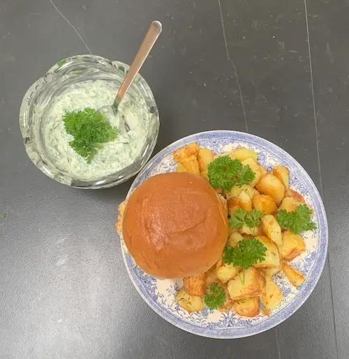

Kylling burger med crispy kartofler

Ingredienser
- 200g kyllinge bryst
- 1 spsk hvedemel
- 2 æg
- 100g pankorasp
- Olivenolie
- Salt og peber
- 100g mayo
- 100g frisk persille
- 2 burgerboller
- 3 fed hvidløg
- 1 tsk timian
- 300g kartofler